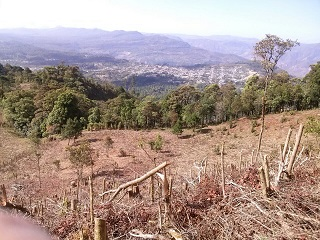
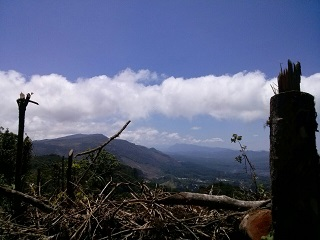
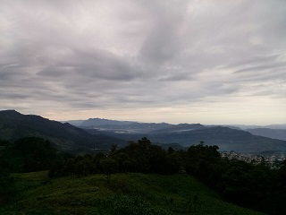
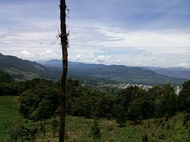
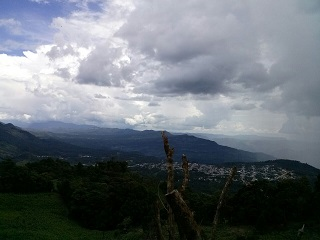

Es un potrero que pertenece a la colonia aurora ermita, municipio de pueblo nuevo Solisthauacan. El nombre del lugar viene debido a que hay dos árboles de ocote que se pueden ver desde la cabecera municipal.
En el lugar pueden realizarse actividades al aire libre, jugar futbol, hacer un picnic entre otras.
En los alrededores hay vegetación típica de la región, así como ganados, también se puede observar paisajes y vistas panorámicas de la cabecera municipal.
Se comenta que últimamente ya no es tan seguro llegar solo así, ya que por problemas de robo de ganado que hay en esas comunidades existen muchos problemas.
Se encuentra en la colonia aurora ermita, municipio de pueblo nuevo Solistahuacan.
Se puede llegar a través de un tramo carretero que conduce a la comunidad o mediante brechas y caminos entre terrenos y lotes del municipio. Partiendo del parque se dirige hacia la carretera federal 195 a la altura del puente carrizal, doblar a la izquierda hasta el desvío en un tramo de terracería, y continuar el camino aproximadamente 30 km, en donde se podrá observar los emblemáticos '2 arbolitos'.
En el lugar usted puede practicar actividades como:





posicione el mouse o de click sobre las imágenes
{kind=link}
{kind=link}
{kind=link}
{kind=link}
{kind=link}